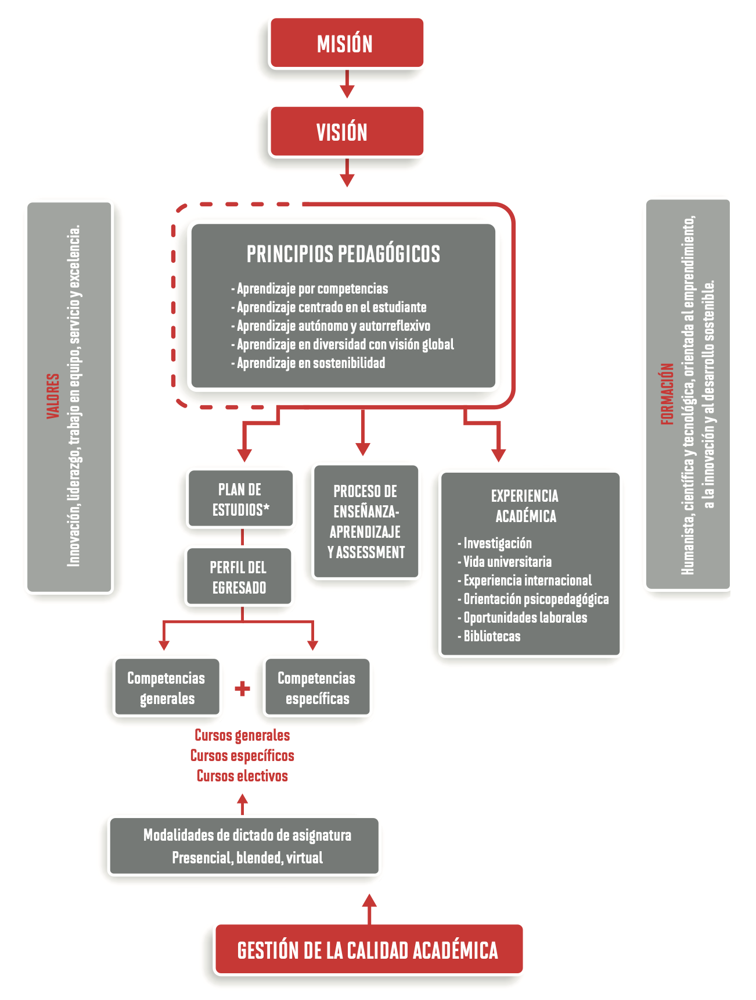

MODELO EDUCATIVO
El modelo educativo de la UPC está formado por un conjunto de lineamientos que resumen su filosofía académica y orientan el proceso educativo en una dirección que conduzca al egresado a desarrollarse personal y profesionalmente, de acuerdo con las exigencias del país y del mundo. Este modelo, que se expresa en las funciones primordiales de la universidad –docencia e investigación–, tiene como base cinco principios pedagógicos que sustentan las acciones y los procesos educativos: aprendizaje por competencias, aprendizaje centrado en el estudiante, aprendizaje autónomo y autorreflexivo, aprendizaje en diversidad con visión global y aprendizaje hacia la sostenibilidad.
Principios Pedagógicos
- Aprendizaje por competencias:
La UPC opta por un modelo educativo basado en competencias, las cuales están alineadas a las expectativas y las necesidades sociales y del mercado laboral. Estas competencias componen el perfil del graduado. - Aprendizaje centrado en el estudiante:
En la UPC, el estudiante está ubicado en el centro del proceso de aprendizaje, desde donde participa activamente, mientras el profesor actúa como facilitador. - Aprendizaje autónomo y autorreflexivo:
La universidad busca proveer al estudiante de las herramientas necesarias para alcanzar un determinado propósito en el aprendizaje, a través de la autorreflexión y la autoevaluación de su rol, y de sus resultados en dicho proceso. - Aprendizaje en diversidad con visión global:
La UPC tiene como principio la promoción de aprendizajes por medio del reconocimiento, la valorización y el respeto a la diversidad. Reconoce el valor fundamental de la internacionalización y de la interculturalidad en la formación integral de sus estudiantes. - Aprendizaje hacia la sostenibilidad:
La universidad se orienta a la formación de personas y profesionales capaces de transformar su entorno a través de procesos y medios innovadores, con lo que contribuye al desarrollo sostenible del país.